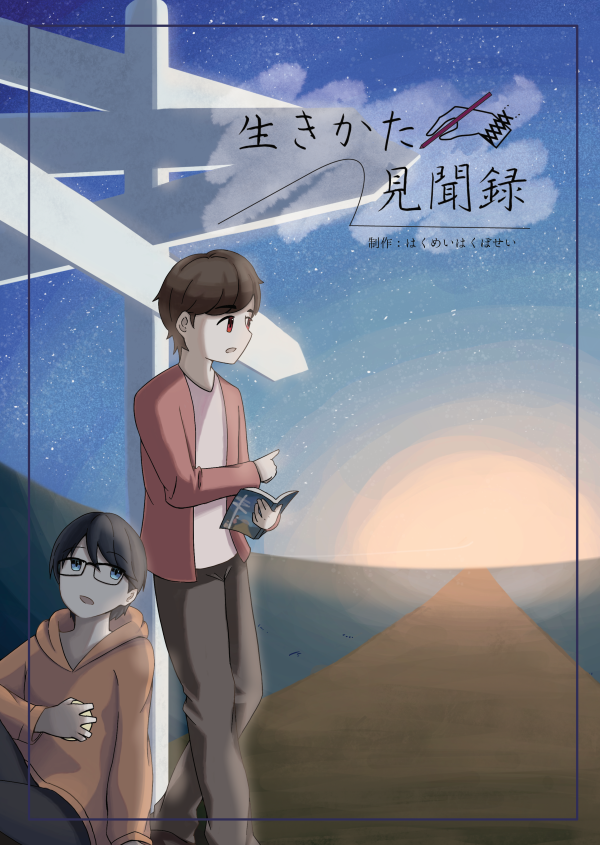

大学の「卒業制作」で共同制作したものになります。
制作期間
2021/03/19 ~ 2021/12/31
担当
企画・冊子編集
目的
現状のキャリア教育とは異なるアプローチによる、将来に悩む学生や社会人の支援
ターゲット
進路や将来に悩む学生や社会人
デザインについて
noteで連載していた記事を再編集して書籍化したものです。
『薄明薄暮性』での反省を活かし、縦書きの長文が読みやすい余白を意識したレイアウトにした。また、文字の濃淡や注釈の位置も再構成し、情報の視認性を高めた。
受賞歴
第22回育友会奨励賞
令和3年度 専修大学ネットワーク情報学部 学部長奨励賞